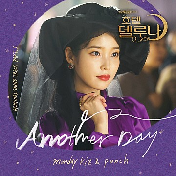
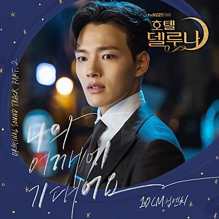
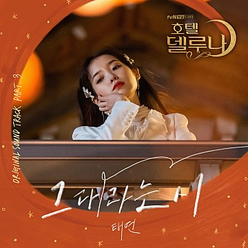
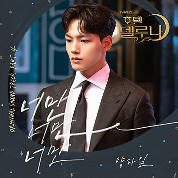
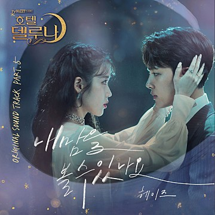

등장인물 OST 다시보기 클립영상 델루나 굿즈
|  | OST Part.1 | |
| 펀치(Punch) & 먼데이키즈 - Another Day | ||
| 음색깡패 솔로가수 "펀치(Punch)와" 감성 발라드로 귀환한 "먼데이키즈"가 OST의 첫 번째 주자로 나선다. 펀치의 매력적인 목소리와 먼데이 키즈의 풍부한 감성표현을 통해 사랑의 그리움이 잘 표현된 노래이다. |
||
|  | OST Part.2 | |
| 10cm - 나의 어깨에 기대어요 | ||
| 가수 10cm 가 OST의 두 번째 주자로 나선다. 어쿠스틱 밴드로 구성되어 있는 팝 느낌의 발라드곡으로 10cm의 매력적인 보이스와 밴드가 잘 어우러져 아련한 감성이 가득한 곡이다. |
||
|  | OST Part.3 | |
| 태연 (TAEYEON) - 그대라는 시 | ||
| ‘그대라는 시'는 담담하면서도 섬세한 피아노 선율에 태연 특유의 감성적인 보이스가 더해져 아련함과 애틋함을 주는 발라드 곡이다. |
||
|  | OST Part.4 | |
| 양다일 - 너만 너만 너만 | ||
| 호소력 있는 목소리와 뛰어난 가창력으로 쓸쓸하면서도 애틋한 느낌이 드는 멜로디와 사랑의 감정을 고백하는 가사가 아련한 느낌을 들게하는 곡이다. |
||
|  | OST Part.5 | |
| 헤이즈 (Heize) - 내 맘을 볼 수 있나요 | ||
| 음색퀸 명품 보컬 헤이즈가드라마에 감성을 이끌어간다. 피아노와 기타와 오케스트라의 연주 위에 쓸쓸한 음색이 슬픔을 더해 홀로 남겨진 그리움을 한편의 드라마처럼 표현했다. |